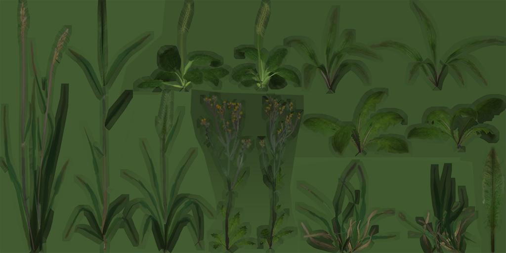
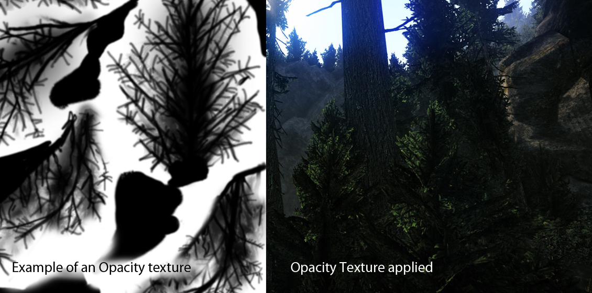

Overview
Section
The vegetation shader provides special features for foliage and grass, most notably translucency (light transmittance).
To open the material dialog for vegetation objects, right-click on your object in the vegetation list and press "Go To Object Material". For more information on vegetation please visit the Vegetation section.
Textures
The Vegetation shader texture setup is very close to Illum with some additional vegetation-specific features.
Texture Slot | Description |
|---|---|
Diffuse | RGB contains diffuse color. Alpha should contain opacity (used for alpha test).  |
Specular | RGB contains specular color. Specular is not used with the 'Grass' option enabled. With PBR, using a constant specular color instead of a map is enough in most cases. |
Bumpmap | RGB contains normal map. DDNA Alpha contains smoothness map. |
Heightmap | See Tessellation and Displacement for more information. |
Detail | See Unified Detail Mapping for more information. |
Opacity | Grayscale map that defines the thickness of foliage and how much light can pass through from the backside (transmittance).  |
Blending Map | See Blend Layer for more information. |
Second Gloss Map | See Blend Layer for more information. |
Second Height Map | See Blend Layer for more information. |
Second Diffuse Map | See Blend Layer for more information. |
Second Bump Map | See Blend Layer for more information. |
Shader Parameters
Shader Params | Description | Shader Gen Requirement |
|---|---|---|
Bending branch amplitude | Defines the movement of blue color in the in the complex bending setup. | All |
Bending edges amplitude | Defines the movement of red color in the in the complex bending setup. | All |
Blend Factor | See Blend Layer for more information. | Blend Layer |
Blend Falloff | See Blend Layer for more information. | Blend Layer |
Blend Layer 2 Spec | See Blend Layer for more information. | Blend Layer |
Blend Layer 2 Tiling | See Blend Layer for more information. | Blend Layer |
Blend Mask Tiling | Change tiling of blend mask. | Default |
Cap opacity fall off | Controls how strongly vegetation polygons fade out when looking at them at a steep angle. This helps to disguise the plane shape of vegetation geometry. | Leaves |
Detail Bending frequency | Defines the bending speed for complex (wind) bending. Always make sure that this is in the right proportion to the wind in your level. | All |
Indirect bounce color | See Illum Shader for more information. | All |
| Normal View Dependency | Controls how strongly normals get oriented towards the viewer/camera. This helps to reduce an overly strong specular gain on vegetation planes. (0 = off, 1 = fully on) | Leaves / Grass |
Terrain Color Blend | Controls how much of the terrain color should be blended into the diffuse color when up close (0 = off, 1 = on). | All |
Terrain Color Blend Dist | Controls how much of the terrain color should be blended into the diffuse color at a distance. This helps to make the vegetation merge visually with the terrain to make LOD popping and aliasing less apparent. | All |
Transmittance Color | Color tint for transmitted light. | Leaves / Grass |
| Transmittance Multiplier | Scale factor for opacity map values. | Leaves / Grass |
Vtx Alpha Blend Factor | Deprecated. | Default |
Shader Generation Parameters
Shader Gen Params | Description |
|---|---|
Leaves | More complex shading for foliage. This will allow you to use an opacity map to control the translucency of the "leaves". |
Grass | Cheap shading for grass which essentially ignores specular and normal map settings. Use Leaves option when higher shading quality is desired for grass. |
Detail bending | Detail bending simulating wind on vegetation objects. |
Detail mapping | See Unified Detail Mapping for more information. |
Blendlayer | DEPRECATED (Prefer Illum shader for surfaces that require the blend layer) See Blend Layer for more information. |
Displacement mapping | See Illum Shader for more information. |
Phong tessellation | See Illum Shader for more information. |
PN triangles tessellation | See Illum Shader for more information. |